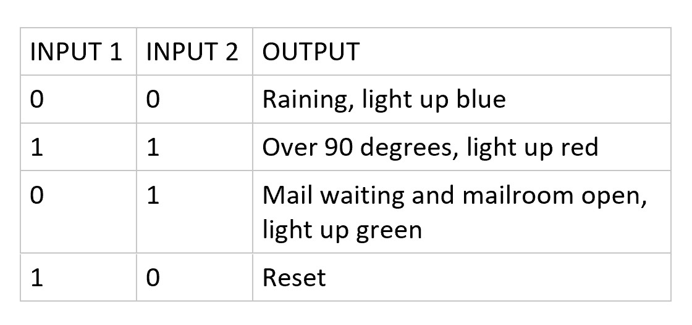

It is tradition for every Mission Impossible movie to have a mission briefing scene, where a good segment of exposition is dumped onto Agent Ethan Hunt through some regular object apparently living a double life. In the 6 movies so far, we’ve seen sunglasses, a disposable camera, a Russian phone booth, a vinyl player, and a hardcover copy of The Odyssey. Oh, and they all “self-destruct”, leaving behind a cloud of smoke (that makes for fantastic looking shots, especially in movies 3 and 6). For this project, I wanted to build an homage to the phone booth from Ghost Protocol, with my own twist of course.

After my visit to Monticello, Thomas Jefferson’s residence and burial site, many things stuck with me. All the beds being embedded inside walls, the mimosa pudica in the garden, and especially the Great Clock. Designed by Jefferson in 1792, what most impressed me was the seven day clock, operating through some ingenious system of counterweights and cannon balls I will not pretend to understand. As the week progressed, the cannonballs would descend past the day markers on the wall, indicating which day of the week it was. Inspired to recreate that using electric motors and a microcontroller, I set out to make a modern rendition of the Great Clock, with an additional little internet-connected feature.
*pic of my own week clock*
Many components went into this little project. First, a microcontroller to control the rotation of the motor was necessary. It would keep track of the day progression (not through a real time clock, but some hacked together implementation of time depending on measuring how long it had been since the microcontroller has been on) and rotate the motor accordingly to spool and unspool the rope. Here you can see up close the servo motor.
*pic of motor glued down*
Next, a hot air balloon structure had to be 3D printed. I opted to handmake a little basket out of paper and hang it by actual threads instead of 3D printing the entire model. The balloon had to be painted over (quite horribly, due to the lack of my artistic skills) and attached to the motor via the black rope. This would be analogous to the cannonballs Jefferson used to mark the day progression.
*pic of hot air balloon*
Originally, I had set out to install an RGB LED at the very top of the clock, which would’ve been easy and quick. Instead, I opted for a more challenging and interesting placement of the LED inside the hit air balloon, a moving part. Doing so would require multiple wires dangling from the microcontroller and be loose enough freely hang with the rest of the hot air balloon and moved up and down at will. Unfortunately, my wires were not very slack. This problem was instead solved by coiling the wires around the black rope, and letting gravity, the weight of the hot air balloon, and the strength of the motor take care of the rest.
*coiled up and lit up LED*
Finally, the software had to be written. The goals were simple, a week clock and an ambient notification system. The first was programmed entirely into the Arduino, while the second was made possible through a Python script for the Raspberry Pi (the most cost effective way to get an Arduino online seemed to be to purchase a Pi and make a dead simple communication protocol between them). The week clock should be pretty well explained by now, but what is an ambient notification system? Overwhelmed by screens and buzzing and ringing, I wanted a very simple internet connected light. This is more novelty than a solution, but this project is an important lesson in product design. All I want is a visual representation of my progression through the week and a little light that tells me different information through color coding. What kinds of things? For myself, I have it turn blue when it’s raining, red when the temperature is above 90, and green when I have mail and the dorm mailroom is open. The first two cases rely on data from Weather Underground, through an IFTTT applet that my Python script detects, while the last one relies on reading my email and checking against a preprogrammed mailroom schedule to light up the LED when it’s time for me to grab the mail. The possibilities are endless (some might use IFTTT to connect their Ring to it to light up each time motion is detected at their doorbell) and nifty. Not groundbreaking, but a nice modern touch to a cool product. Sometimes that’s all it takes.
*pic of rpi and arduino hooked up*
A really cool aspect of this project was getting the Arduino and the Raspberry Pi to talk to each other. It might’ve been easier to just have the Pi control the LED itself but having the Arduino be the middleman to all physical aspects of the project was an interesting philosophy by which to divvy up the microcontroller vs microcomputer tasks. Simply by connecting two wires from the GPIO of the Pi to the digital pins on the Arduino, I was able to represent a 2 bit communication protocol. By turning either 1 wire low (0 volts) or high (some volts), I could have 4 states conveyed from the Pi to the Arduino. These are low low, high high, low high, or high low. I made the first 3 represent each of the 3 states the LED could be in (raining, over 90, or have mail), and the last one just be a reset. The Arduino reads the signals on the two pins and changes the LED color accordingly.

I thoroughly enjoyed making this clock, every aspect from 3D printing, to writing the Python script, coming up with actual use cases, and the entire assembly. As many physical consumer electronics products are, this was a multidisciplinary project and I cannot wait for my next one. Until then, all the code for this one can be found on my Github.
*gif of clock rising*